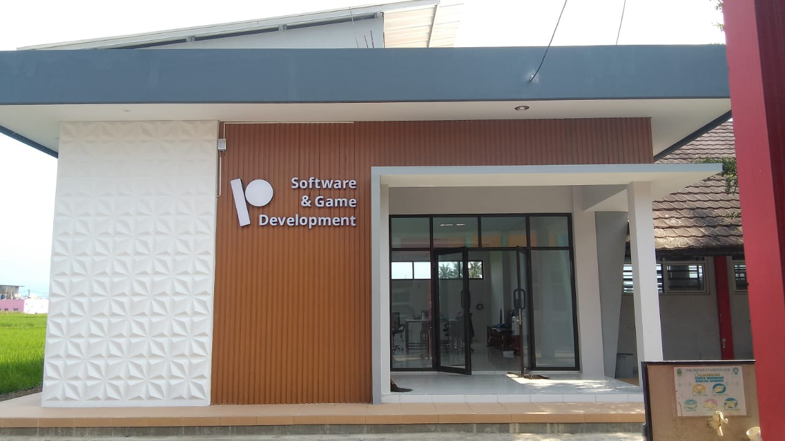

tami</p>
    </footer>
</body>
</html>

<!DOCTYPE html>
<html lang="en">
<head>
    <meta charset="UTF-8">
    <meta name="viewport" content="width=device-width, initial-scale=1.0">
    <title>Rekayasa Perangkat Lunak</title>
    <link rel="stylesheet" href="test.css">
</head>
<body>
    <header>
        <div class="container">
            <div class="logo">
                
            </div>            <nav>
                <ul>
                    <li><a href="#">Beranda</a></li>
                    <li><a href="#">Profil</a></li>
                    <li><a href="#">Kurikulum</a></li>
                    <li><a href="#">Pengajar</a></li>
                    <li><a href="#">Fasilitas</a></li>
                    <li><a href="#">Kontak</a></li>
                </ul>
            </nav>
        </div>
    </header>

    <section class="main-content">
        <div class="content">
            <h1>Rekayasa Perangkat Lunak</h1>
            <p>Rekayasa Perangkat Lunak (RPL) adalah bidang ilmu yang mempelajari tentang pengembangan perangkat lunak, mulai dari pembuatan, pemeliharaan, hingga manajemen organisasi dan kualitasnya. RPL merupakan proses terstruktur dan sistematis untuk membangun perangkat lunak yang berkualitas tinggi dan memenuhi kebutuhan pengguna.</p>
            <button>Selengkapnya</button>
        </div>
        <div class="image">
            
        </div>
    </section>

    <section class="info">
        <div class="info-item">
            <h2>Sejarah</h2>
            <p>PPLG dib]ka pada tahun 2014 sebagai konsentrasi keahlian dibawah TKI yang juga satu rumpun dengan TKJ.Saat itu bernama RPL (Rekayasa Perangkat Lunak) sebelum namanya menjadi PPLG pada tahun 2022 dan resmi menjadi Program Keahlian yang terpisah dengan TKJ.</p>
        </div>
        <div class="info-item">
            <h2>Visi Misi</h2>
            <p>Visi: Terwujudnya lulusan teknik yang Cerdas, Aktif, Kompetitif, Adaptif dan Produktif berlandaskan iman dan takwa</p>
        </div>
    </section>

    <section class="kurikulum">
        <h2>Kurikulum</h2>
        <p>Mata pelajaran sesuai dengan apa yang sedang dipelajari oleh kelas X, XI dan XII PPLG. pada tingkat XI dan XII pembelajaran mapel kejuruan ada perubahan peningkatan menjadi pembelajaran Teaching Factory yang mengadopsi industri/Tech.Company.</p>
    </section>

    <section class="pengajar">
        <h2>Pengajar</h2>
        <div class="pengajar-grid">
            <div class="pengajar-item">
                
                <p>Hj.Sri Agustina<br>IPAS</p>
            </div>
            <div class="pengajar-item">
                
                <p>Suminar,M.Kom<br>PKK</p>
            </div>
            <div class="pengajar-item">
                
                <p>Imas Masruroh,S.T
<br>Dasar-Dasar Kejuruan</p>
            </div>
            <div class="pengajar-item">
                
                <p>R.Tini Rantini,S.H<br>PPKN</p>
            </div>
            <div class="pengajar-item">
                
                <p>lisye diana inggriani,S.Kom<br>Dasar-Dasar Kejuruan</p>
            </div>
            <div class="pengajar-item">
                
                <p>Lisna Windi Nurhuda,S.PD<br>PENJASKES</p>
            </div>
           
            <div class="pengajar-item">
                
                <p>Adi Iasan,S.T<br>Teaching factory</p>
            </div>
            <div class="pengajar-item">
                
                <p>Andi Moh Permadi,S.Kom<br>Teaching factory</p>
            </div>
           
            <div class="pengajar-item">
                
                <p>Arip,S.T.,M.Kom.<br>Konsentrasi Keahlian</p>
            </div>
           
            <div class="pengajar-item">
                
                <p>Deni Maulana,S.T.<br>informatika</p>
            </div>
            <div class="pengajar-item">
                
                <p>Taufik Hidayat,S.Kom.<br>Teaching Factory</p>
            </div>
         
            <div class="pengajar-item">
                
                <p>Herlina Pratama,S.Pd.<br>B.Inggris</p>
            </div>
        <!-- add more items as needed-->
         </div>
      </section>   
       <!-- Fasilitas Section -->
    <section class="fasilitas">
        <h2>Fasilitas</h2>
        <div class="carousel">
            <div class="image-placeholder">
            
            </div>
            <div class="image-placeholder">
             
            </div>
            <div class="description"
                <p>PPLG memiliki 1 gedung RPS dengan 4 Lab.Komputer dan 1 gedung working space untuk Teaching Factory.</p>
            </div>
           </div>
    </section>    
   <section class="contact">
        <h2>Hubungi Kami</h2>
        <form action="#">
            <label for="name">Nama</label>
            <input type="text" id="name" name="name" placeholder="Masukkan Nama">
            <label for="email">Email</label>
            <input type="email" id="email" name="email" placeholder="Masukkan Email">
            <label for="message">Pesan</label>
            <textarea id="message" name="message" placeholder="Tulis Pesan"></textarea>
            <button type="submit">Kirim</button>
        </form>
        <div class="social-media">
            <h3>Follow Kami</h3>
            <p><a href="#">YouTube</a></p>
            <p><a href="#">Facebook</a></p>
            <p><a href="#">Instagram</a></p>
        </div>
    </section>

    <footer>
        <p>Copyright PPLG @ sahal ikhsan sanuri